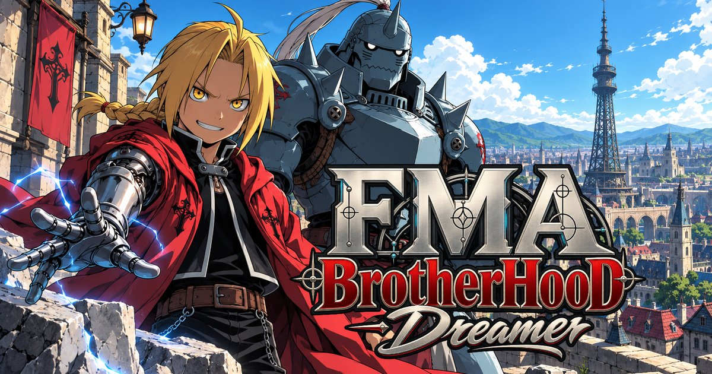

Act 04 · Amestris
Ladies, gentlemen, and that suit of armour:
Fullmetal Alchemist Lorebook
The republic of Amestris and the lands around it on one map: the capital at the centre, the eastern areas running out to Ishval and the desert, the northern range along the border with Drachma, the southern front with Aerugo, and the western border with …


Step right up! Mind the hat.
The republic of Amestris and the lands around it on one map: the capital at the centre, the eastern areas running out to Ishval and the desert, the northern range along the border with Drachma, the southern front with Aerugo, and the western border with Creta. Xing lies far to the east, across the Eastern Desert, and the Gate is no place on this map at all: it is reached only by a price.
- People
- Places
- Map
- Districts
- Factions
- Creatures
- Lore
- New player guide
- Quests
- What to say
- Character planner
- Abilities
- Traits
- Skills
- Items
- Story starts
- Game modes